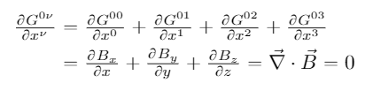

Below are some of my physics talks, side-projects, and papers.
Electromagnetic Field and Dual Tensors
I have seen that several electrodynamics texts leave the derivation of the field and dual tensors as an exercise to the reader. I have Lorentz transformed an antisymmetric tensor twice below and have matched the set of transformation rules to previous results from special relativity to arrive at the field and dual tensors.
From our previous knowledge of the Lorentz transformations we know that fields transform as
We see there are six transformations and feel inspired to find an object with six distinct elements—a rank-2 antisymmetric tensor—that matches these results. Such a tensor is of the form
 Let's Lorentz transform each of the six distinct elements of the above twice
Let's Lorentz transform each of the six distinct elements of the above twice
where the Lorentz transformation matrix Λ is
where γ is the Lorentz factor and β ≡ v/c: So the set of transformations is There are two ways to correspond equations (1)-(6) with (7)-(12) respectively, giving rise to the field and dual tensors.Electromagnetism in Tensor Notation
Using the above-found field and dual tensors, Maxwell's four equations in differential form become two tensor equations: where is the current density 4-vector.
I will "run the indexes" below, showing that equations (5) and (6) capture the same information as equations (1)-(4). This is often left as an "exercise to the reader" in electrodynamics texts. Running indexes on equation (5):
That is equation (1).

Putting the above three components together gives
which is equation (4).
Now running indexes on equation (6):
which is equation (3).
Putting the above three components together gives
which is equation (2).
In summary, equations (1) & (4) are expressed in (5); equations (2) & (3) are expressed in (6).
Electromagnetism in the Lorenz Gauge
We reduced Maxwell's four equations to two tensor equations in the above section. We can do better, reducing the two tensor equations to one equation. Recall from electrostatics that
Also recall Faraday's law:
and that the magnetic field is the curl of the magnetic vector potential:
Substituting (3) into (2),
Putting together (1) and (4),
So we see that the scalar electric potential and the magnetic vector potential entirely describe time-dependent electric and magnetic fields. We can construct a 4-vector:
I will verify that the field tensor (derived above) can be written as
For reference, also recall that the position four-vector is
Running the indexes,
 So the electric and magnetic fields can indeed be described by (7). Now, substituting (7) into the inhomogeneous Maxwell Equation
gives
But in the Lorenz gauge,
So
So (8) becomes
Griffiths calls the above the "most elegant formulation of Maxwell's equations." I think it is beautiful.
So the electric and magnetic fields can indeed be described by (7). Now, substituting (7) into the inhomogeneous Maxwell Equation
gives
But in the Lorenz gauge,
So
So (8) becomes
Griffiths calls the above the "most elegant formulation of Maxwell's equations." I think it is beautiful.
Coriolis and Centrifugal Forces
The motion in the reference frame of a mass given some initial velocity on a frictionless, flat, surface rotating at ω = 1 rad/s, solved numerically. The Coriolis and centrifugal forces are "fictitious" since they arise from applying Newton's laws to a non-inertial frame; in the inertial frame, the mass will travel in a straight line. The equations of motion and numerical solution for three different initial velocities are shown below.
Since ω points in the z-direction, the above can be reduced to
Symmetric Top in Gravity
The motion of a symmetric top (I1 = I2 ≠ I3) of mass M (center of mass at height h) with tip fixed in gravity g solved using Euler angles and the Lagrangian formulation, assuming there is no acceleration in the ψ direction. The Lagrangian, equations of motion, and numerical solution are shown below.


Classical Particle in a Cone
The motion of a particle subject to gravity g inside of a cone of opening angle α, solved using the Lagrangian formulation. The equations of motion and numerical solution are shown below.

Cycloid Motion
The motion of a charged particle subject to perpendicular uniform electric and magnetic fields E = Ez and B = Bx, solved numerically. Amazingly, the particle's average trajectory lies perpendicular to both the electric and magnetic fields.


Project for MATH 3321 - Geometry, Summer 2020
Ballistic Entry: Monte Carlo Simulation
Musical Astronomy: Graduate Students of Physics talk (fall 2018)
Numerical Solutions to the Stellar Structure Equations
These solutions are not normalized but can be solved for the boundary conditions of any main-sequence star.


PHYS 3380 project on the Solar Analema
IntelliChoice 2020 Math Camp
Recorded lecture can be found here.
Benford's Law: Exoplanets
This was a project I did in 12th grade for AP Statistics.